Como acompanhar o dinheiro no Vela e o que depende de você
Versão de 05/11/2026 Telas com dados fictícios Casos raros: Manual do Operador, cap. 22 a 24
O Vela faz sozinho quase todo o caminho do dinheiro: emite a fatura, gera o Pix e, quando o Cliente paga pelo QR, dá a baixa em cerca de um minuto. Você não precisa repetir esse trabalho.
Seu papel é conferir que ele aconteceu e cuidar do que só o Financeiro pode fazer: baixa manual, cancelar uma baixa e devolver dinheiro ao Cliente.
A pergunta de todo dia
O que o Vela deu como pago entrou de fato na conta do Itaú? E o que entrou na conta tem a sua baixa no Vela?
Onde ficam as suas telas
Tudo fica no menu Financeiro, no alto da tela: Taxas Locais, Demurrage e Conciliação PIX.
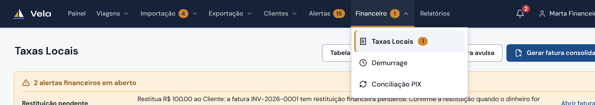
O que depende de você
Tarefa
Quando aparece, ou quem pede
Pág.
Bater o extrato do Itaú com o Vela
Todo dia, pela Conciliação PIX.
2–3
Dar baixa num Pix “Sem baixa”
O Cliente pagou digitando a chave Pix, sem o QR. Não abre alerta: você vê na conferência do dia.
6
Registrar um pagamento
O Cliente pagou por TED, boleto ou depósito e mandou o comprovante, ou outra equipe repassou.
6
Decidir um Pix em análise
Alerta crítico PIX sem conciliação segura no seu sino.
8
Cancelar uma baixa
Uma baixa foi lançada por engano. Também a pedido do Administrativo, antes de ele cancelar uma fatura com pagamento lançado por engano.
7
Devolver dinheiro ao Cliente
Alerta Restituição pendente: o Cliente pagou a mais ou duas vezes, ou o B/L foi corrigido depois de pago.
7
Cancelamento financeiro de um B/L pago
Pedido do Administrativo, que vai cancelar um B/L cuja fatura já foi paga.
8
Informar a PTAX
Aviso “PTAX de hoje não obtida do BCB”, depois das 14h.
5
Se a ligação com o Itaú parar
O Vela avisa sozinho: chega ao seu sino o alerta crítico Consulta de Pix do Itaú parada, e o bloco Cobrança Pix Itaú (página 2) fica em âmbar com “Consulta parada há N min”. Os Pix pagos depois disso não dão baixa sozinhos. Avise o suporte técnico. O plano B, baixar pelo extrato, está no Manual do Operador, 24.3.
Guia rápido do Financeiro · Vela1
1
Pix recebidos
Menu Financeiro › Conciliação PIX › aba Pix recebidos
Mostra todo Pix que entrou na conta da Fwlog no Itaú, um por linha, e o que o Vela fez com cada um. É a tela para comparar com o extrato do banco.
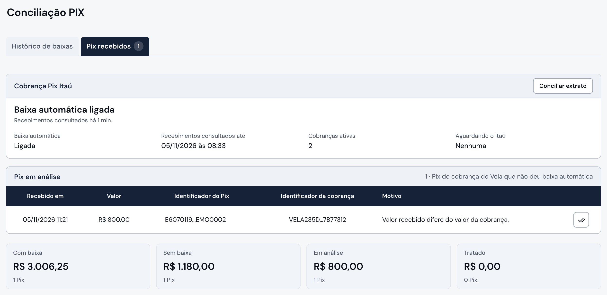
Baixa automática ligada: está tudo funcionando. Logo abaixo, há quanto tempo o Vela consultou o Itaú (normal: poucos minutos) e quantas cobranças Pix estão abertas (Cobranças ativas).
Pix em análise: só aparece quando um Pix pago pelo QR do Vela não pôde ser baixado com segurança. No exemplo, o Cliente pagou R$ 800,00 numa cobrança de R$ 850,00. Esse caso é seu (página 8). O número ao lado do nome da aba conta esses casos.
Totais do período filtrado: quanto entrou com baixa, sem baixa, em análise e tratado.
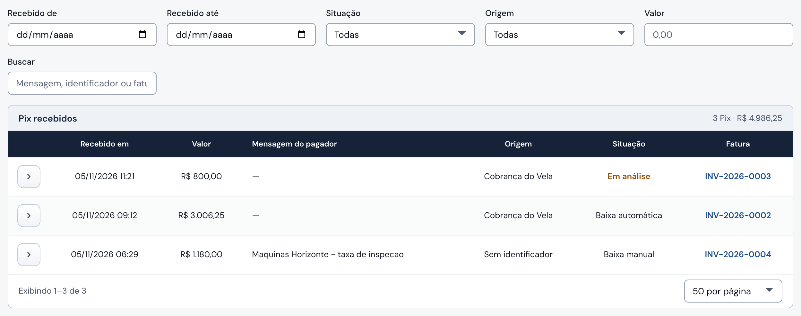
Recebido de / Recebido até: escolha o dia do extrato que você está conferindo.
Origem: Cobrança do Vela é o QR da fatura; Sem identificador, o Cliente que digitou a chave Pix. ZPT e Teste do Vela usam a mesma conta, mas não são cobranças do Vela: ficam sem baixa e não há o que fazer.
Situação: Baixa automática, Baixa manual ou Baixa pelo extrato quer dizer que já entrou numa fatura (coluna Fatura). Em análise pede a sua decisão. Sem baixa: ninguém baixou ainda.
Todo dia: do extrato para o Vela
Abra o extrato do Itaú do dia anterior.
Aqui, filtre Recebido de e Recebido até nesse mesmo dia.
Cada Pix do extrato precisa estar na lista, com baixa. Um Sem baixa de Cliente você baixa pela própria linha (página 6).
Guia rápido do Financeiro · Vela2
2
Histórico de baixas
Menu Financeiro › Conciliação PIX › aba Histórico de baixas
Mostra tudo o que o Vela deu como recebido, de Taxas Locais e de Demurrage, venha do Itaú ou de uma pessoa. É o outro lado da conferência.
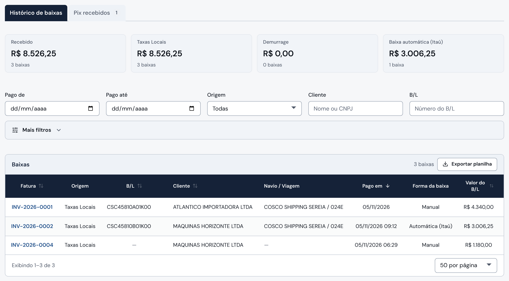
Totais: Recebido é tudo o que o Vela deu como pago no período, separado em Taxas Locais e Demurrage. Baixa automática (Itaú) é a parte que o Vela fez sozinho.
Pago de / Pago até: o mesmo dia que você conferiu em Pix recebidos.
Pago em: dia e hora do Pix. O pagamento registrado à mão (TED, boleto) mostra só o dia.
Forma da baixa: Automática (Itaú), Pelo extrato, Manual (lançada por uma pessoa) ou Isenção (desconto de 100% na Demurrage, sem dinheiro).
Todo dia: do Vela para o extrato
Filtre Pago de e Pago até no mesmo dia.
Toda linha Manual precisa de um TED, boleto ou Pix correspondente no extrato.
Se não houver dinheiro no extrato, a baixa foi lançada por engano: cancele (página 7).
Cada linha é um B/L. No exemplo, a INV-2026-0001 recebeu um TED de R$ 4.440,00, e a linha mostra R$ 4.340,00, o valor do B/L. Os R$ 100,00 a mais viraram restituição (página 7).
Como o trabalho chega até você
O Vela avisa no sino, no alto à direita, quando algo depende do Financeiro. Clique na notificação: ela abre a tela certa. Os mesmos avisos aparecem na faixa amarela no alto de Taxas Locais (página 4), e cada um some sozinho quando o caso é resolvido.
PIX sem conciliação seguraRestituição pendenteFatura desatualizadaConsulta de Pix do Itaú parada
Os pedidos das outras equipes chegam por fora do Vela, como e-mail ou conversa: registrar um pagamento, cancelar uma baixa ou preparar um cancelamento financeiro. Para elas, esses botões não aparecem ou ficam apagados.
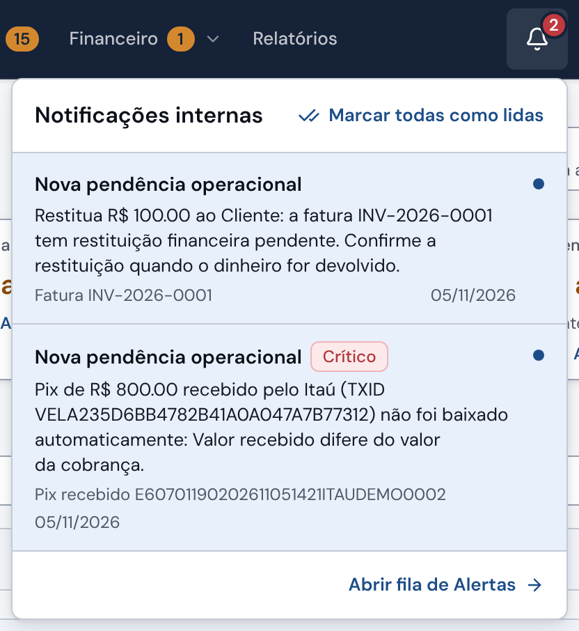
Guia rápido do Financeiro · Vela3
3
Taxas Locais
Menu Financeiro › Taxas Locais › aba Faturas
As faturas de cada B/L, em reais: THD, emissão do B/L e as outras taxas do porto, além das avulsas. Elas saem sozinhas quando o CE Mercante é gravado.
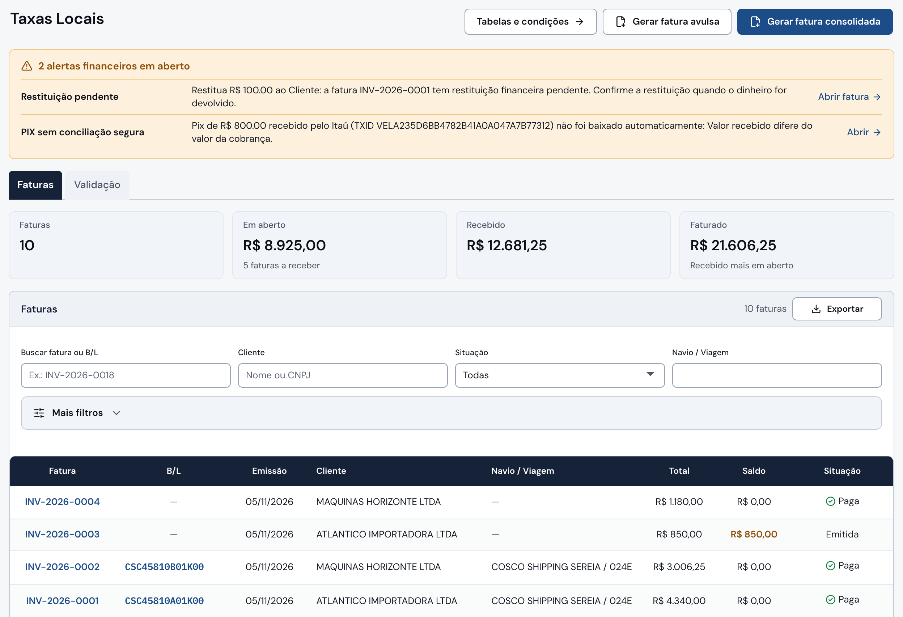
Faixa amarela: os alertas financeiros em aberto, cada um com o atalho para resolver.
Totais do filtro: Em aberto (quanto falta receber), Recebido e Faturado.
Faturas abertas de um navio: Situação “Em aberto” e o campo Navio / Viagem. Em Mais filtros há também Pagamento de/até, Emissão e Tipo.
Clique no número para abrir a fatura: saldo, itens, pagamentos e restituições. É lá que você registra pagamento, cancela baixa e confirma devolução.
As situações da fatura
Emitida: em aberto, sem pagamento. Parcialmente paga: recebeu parte; o QR passa a cobrar o saldo. Paga: quitada. Coberta: foi paga por uma fatura consolidada (o ícone de pilha marca a consolidada). Cancelada: não é mais cobrada.
A fatura de Taxas Locais não vence: fica em aberto enquanto tiver saldo.
A aba Validação
Mostra os B/Ls que ainda não viraram fatura e o motivo de cada um (falta Cliente, CE Mercante ou Portal). Quem resolve é a Documentação. Para você, é a previsão do que vai ser faturado.
Guia rápido do Financeiro · Vela4
4
Demurrage
Menu Financeiro › Demurrage › aba Faturas
A Invoice de Demurrage é cobrada em dólar e paga em reais. O dólar fica travado na emissão; os reais e o Pix acompanham o câmbio de cada dia útil até o pagamento.
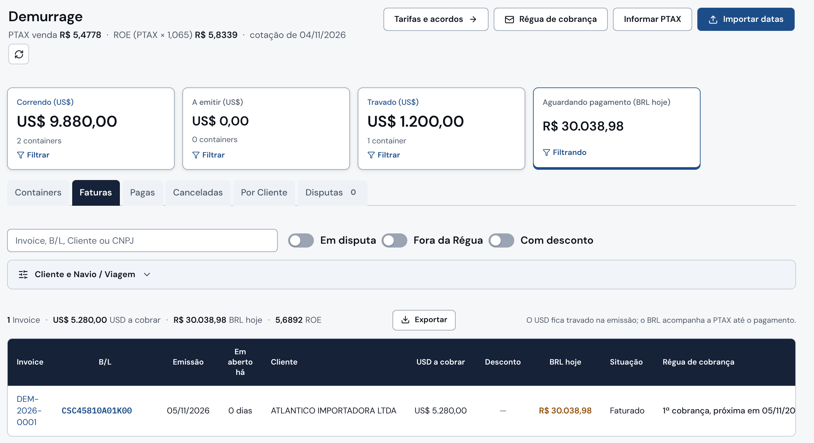
Câmbio do dia: a PTAX (cotação oficial do BCB) e o ROE, que é a PTAX × 1,065. Os reais das Invoices em aberto mudam todo dia útil às 14h.
Informar PTAX: use só se aparecer o aviso “PTAX de hoje não obtida do BCB”. Digite a PTAX de venda do site do BCB, não o ROE.
Abas: Faturas (em aberto), Pagas, Canceladas e Por Cliente. As abas Containers e Disputas são de Equipamentos.
Régua de cobrança: o e-mail de cobrança que o Vela manda sozinho ao Cliente. Mostra em qual cobrança a Invoice está e quando sai a próxima.
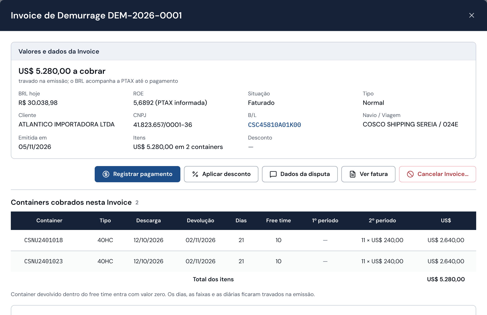
BRL hoje: o valor em reais de hoje. O Pix acompanha esse valor. Um Pix com o valor da cotação do dia anterior também quita a Invoice.
Registrar pagamento: só para o que chegou fora do Pix do QR, porque esse dá baixa sozinho. Não tem campo de valor: você informa o dia em que o dinheiro entrou, e o Vela usa o câmbio daquele dia. Não use para pagamento parcial.
Guia rápido do Financeiro · Vela5
5
O que depende de você: receber
Só o Financeiro dá baixa. Para as outras equipes, a tela diz “Somente o Financeiro registra recebimentos”.
Dar baixa num Pix “Sem baixa”
Quando
Na conferência do dia, um Pix aparece Sem baixa com origem Sem identificador: o Cliente digitou a chave Pix em vez de usar o QR. Não abre alerta.
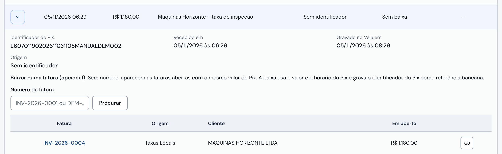
Em Pix recebidos, clique na seta da linha para abrir o Pix. A Mensagem do pagador ajuda a saber quem pagou.
O Vela sugere as faturas abertas com o mesmo valor. Se a fatura certa não estiver ali, digite o número e clique em Procurar.
Clique em Baixar nesta fatura. O Vela usa o valor, a hora e o identificador do Pix.
Resultado: o Pix passa a Baixa manual, e a fatura fica Paga no Vela e no Portal do Cliente.
Registrar um pagamento (TED, boleto, depósito)
Quando
O dinheiro entrou sem o QR do Vela. O Cliente mandou o comprovante, ou outra equipe repassou. Confira antes no extrato.
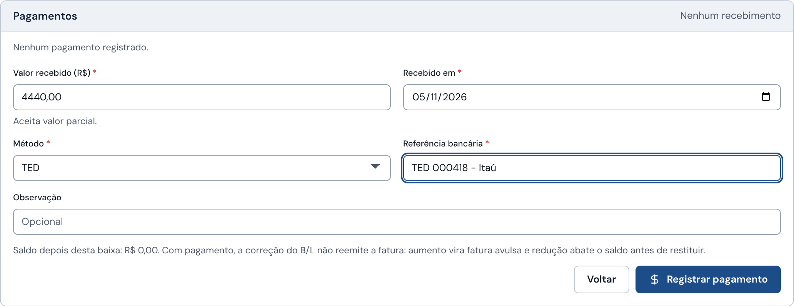
Abra a fatura em Taxas Locais e, no bloco Pagamentos, clique em Registrar pagamento. Digite o valor que entrou. Aceita valor parcial.
Recebido em: o dia do extrato.
Método: TED, boleto, Pix…
Referência bancária: o número do TED ou do comprovante. Para um Pix, o Identificador do Pix.
Clique em Registrar pagamento e, na janela de conferência, em Confirmar pagamento recebido.
Se entrou mais que o saldo, a conferência avisa antes, e o excedente vira restituição A devolver (página 7). Se a conexão cair, use Tentar novamente; não comece outro registro.
Guia rápido do Financeiro · Vela6
6
O que depende de você: corrigir e devolver
Na fatura aberta em Taxas Locais. Só o Financeiro cancela baixa e confirma devolução.
Cancelar uma baixa
Quando
Uma baixa foi lançada por engano: o dinheiro não entrou, ou entrou na fatura errada.
Quem pede
Quem percebeu o erro. O Administrativo também pede, antes de cancelar uma fatura que tem pagamento lançado por engano: a fatura com pagamento não se cancela.
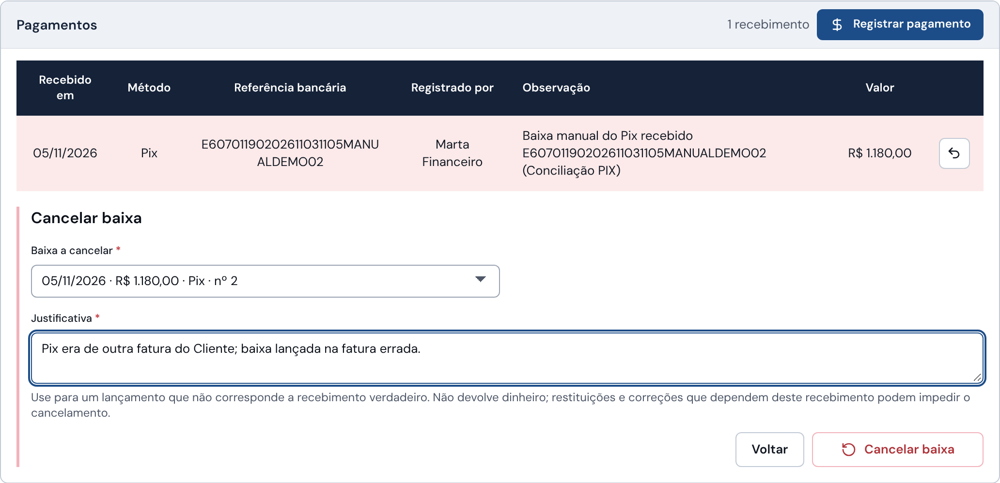
No bloco Pagamentos, clique no ícone Cancelar baixa da linha do pagamento.
Escreva a Justificativa.
Clique em Cancelar baixa e confirme.
Resultado: o saldo volta, e a fatura volta a Emitida (ou Parcialmente paga) e a cobrar pelo QR. Se era um Pix do Itaú, ele volta para Pix em análise. Cancelar a baixa não devolve dinheiro: se o dinheiro entrou e precisa voltar, é restituição.
Devolver dinheiro ao Cliente (restituição)
Como nasce
Quase sempre sozinha: o Cliente pagou a mais, pagou duas vezes, o B/L foi corrigido e a fatura paga diminuiu, ou o B/L trocou de Cliente. Também quando alguém autoriza uma restituição de avulsa ou de Demurrage, ou quando você prepara um cancelamento financeiro (página 8).
Aviso
Alerta Restituição pendente no seu sino. Ele fecha quando não sobra nada a devolver.
Passo 1, no banco: transfira o valor ao Cliente original e guarde o comprovante. Só depois, no Vela:
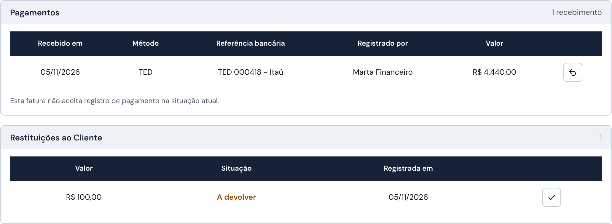
O pagamento que gerou a restituição. Neste caso, um TED de R$ 4.440,00 numa fatura de R$ 4.340,00.
A restituição nasce A devolver.
Depois da transferência, clique no ícone Confirmar devolução.
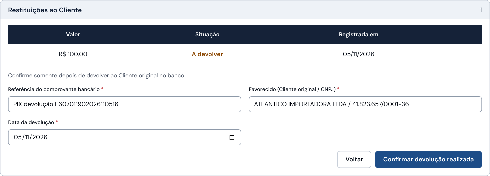
A referência do comprovante da transferência.
Quem recebeu: o Cliente original e o CNPJ.
O dia da transferência.
Confirmar devolução realizada. A linha passa a Devolvida, e a devolução confirmada não se altera mais.
Guia rápido do Financeiro · Vela7
7
Pix em análise e pedidos do Administrativo
O que chega por alerta crítico, e as ações que o Financeiro faz junto com o Administrativo
Decidir um Pix em análise
Quando
Alerta crítico PIX sem conciliação segura. O Pix fica no bloco Pix em análise (página 2), com o motivo.
Valor diferente da cobrança: confira no extrato e registre o pagamento na fatura, como acima, com o Identificador do Pix na Referência bancária. Pix em duplicidade (a fatura já estava paga): o Vela já criou a restituição; devolva o dinheiro (página 7). Resolvido por outro caminho, use Marcar como tratado na linha, com o motivo. Os outros casos estão no Manual do Operador, 24.2.
Cancelamento financeiro de um B/L pago
Quando
O Administrativo vai cancelar um B/L cuja fatura já foi paga, e o dinheiro precisa voltar ao Cliente. Ele pede ao Financeiro antes de cancelar o B/L.
1 · FinanceiroPreparar cancelamento financeiro, na fatura (abaixo). O que o Cliente pagou vira restituição A devolver.
2 · FinanceiroTransfere o dinheiro no banco e confirma a devolução (página 7).
3 · AdministrativoCancela o B/L na ficha dele. Esse passo não é do Financeiro.
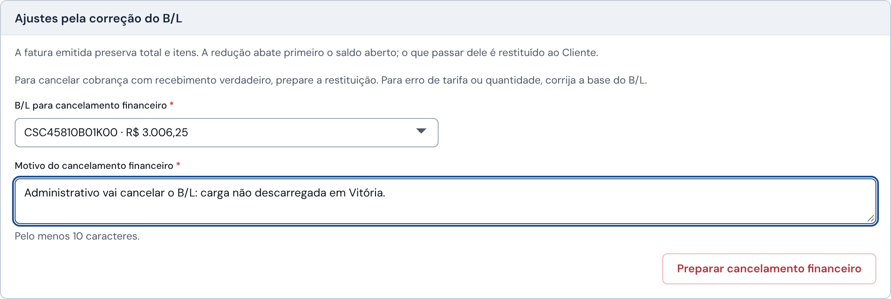
No bloco Ajustes pela correção do B/L, escolha o B/L.
Escreva o motivo, por exemplo o pedido do Administrativo.
Clique em Preparar cancelamento financeiro e confirme. A fatura e o B/L continuam no Vela; só a cobrança desse B/L sai.
Atenção: o Vela não obriga essa ordem. Se o Administrativo cancelar o B/L antes, o valor pago não vira restituição. Por isso o pedido vem primeiro ao Financeiro.
Cancelar uma fatura
Quem faz
O Financeiro ou o Administrativo, quando a cobrança não deve existir, por exemplo antes de cancelar um B/L ou uma Viagem.
No fim da fatura aberta, bloco Cancelar fatura: escreva o Motivo e clique em Cancelar fatura. A fatura com pagamento não se cancela: se o pagamento foi lançado por engano, primeiro cancele a baixa (página 7); se o dinheiro é verdadeiro, use o cancelamento financeiro acima. Para corrigir o valor ou o Cliente, não cancele: corrige-se o B/L, e a fatura acompanha sozinha.
O que só o Financeiro faz
Registrar pagamento, cancelar a baixa, conciliar o Pix, confirmar a devolução de uma restituição e preparar o cancelamento financeiro de um B/L pago. Desde 04/11/2026, o Administrativo não faz mais essas ações; quando precisa, ele pede ao Financeiro.